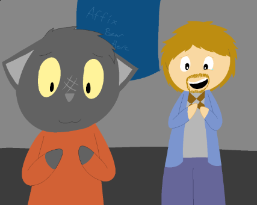

 Dragonbitch is the given name to an online WebComic by Ducky Ducklett (who used to be known as "b1tchduck"), the comic was first started in Spring of 2017, "when Ducky Ducklett said to themselves, 'what if I made a cheesy, meta-as-hell self-insert comic about my character in Skyrim?'".
The story of the comic orbits around two main characters; Solani Lunos, a blacksmith who at the start of the story gets herself caught up in an Imperial ambush. Solani is a humanoid cat-like person, who is part of the Khajiit race.
The second of the two main character is Ulfric Stormcloak (also known as "Cutie", and "Cutie McGee"), who is a male humanoid, who is part of the Nord race. Ulfric Stormcloak is the leader of the Stormcloak rebellion.
The comic is based upon the action role-playing open-world fantasy computer game series, The Elder Scrolls, that are primarily developed by computer video games giant, Bethesda Studios (who also in part own the rights to "Doom", after Bethesda's parent company, ZeniMax Media, acquired id Software in 2009). The comic uses ideas first used by The Elder Scrolls, such as the Khajiit, and Nord race, along with using locations of the game like Helgen
The comic has yet to be completed, and the website itself has not been worked on since January of 2018.
The WebComic also had it's own Discord server, however, it has since disappeared. Nothing at all is known about the server.
I. The Dragonbitch dashboard https://neocities.org/site/dragonbitch [Internet Archive]
II. The characters page https://dragonbitch.neocities.org/pages/char.html [Internet Archive]
III. About Dragonbitch https://dragonbitch.neocities.org/pages/about.html [Internet Archive]
IV. Bethesda Softworks https://doomwiki.org/wiki/Bethesda_Softworks [Internet Archive]
This page was last updated: 30/06/2018 @ 02:31
In total this page has had 0 updates since it was uploaded.